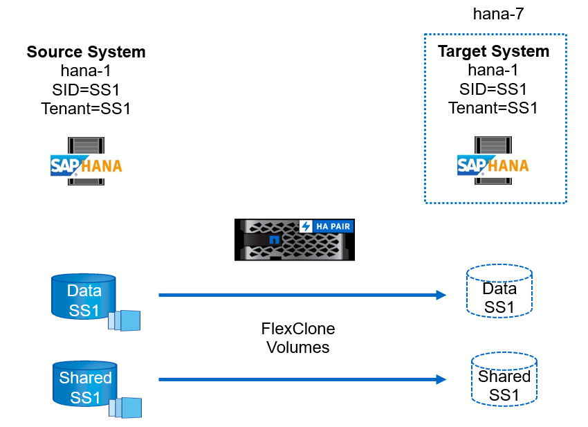
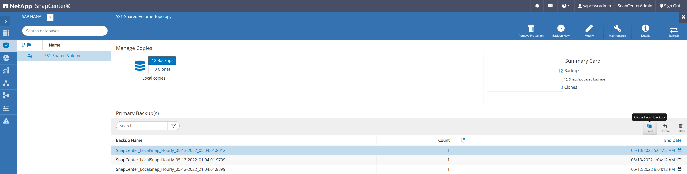
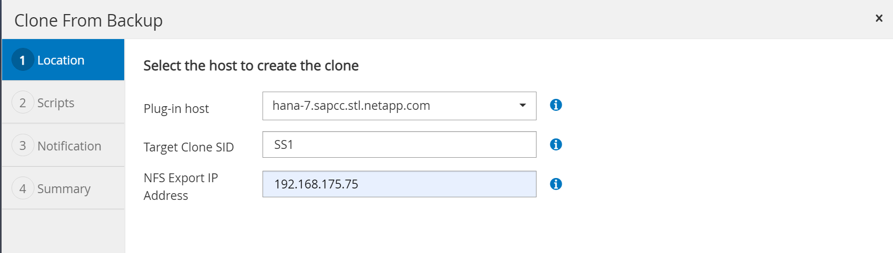
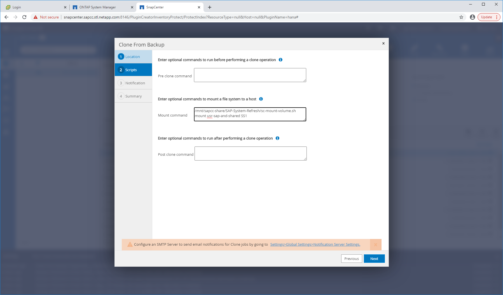
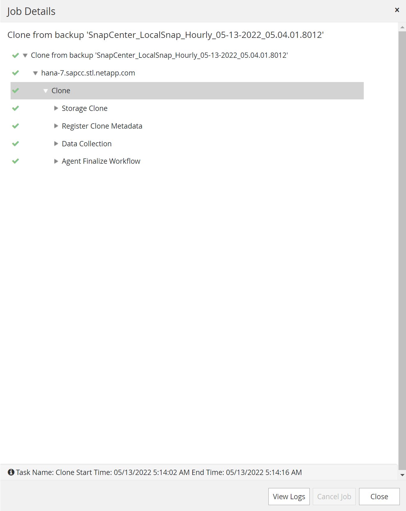
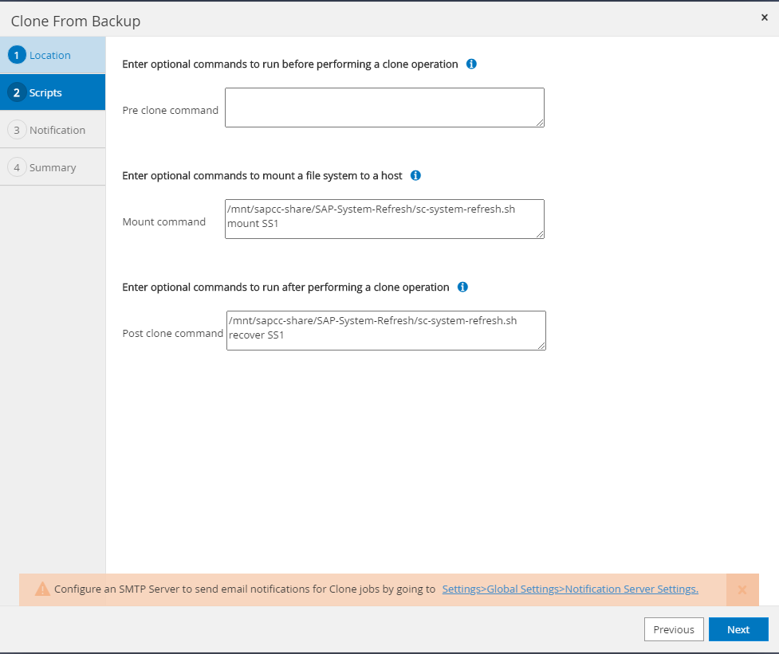
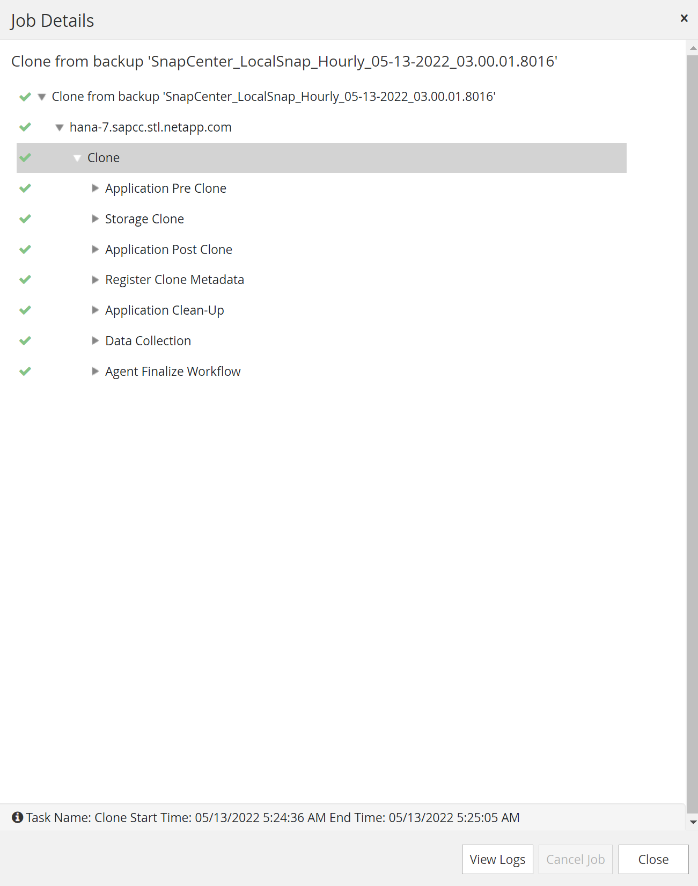

모범 사례
모범 사례
SnapCenter를 사용한 SAP 시스템 클론
 변경 제안
변경 제안
이 섹션에서는 SAP 시스템 클론 작업에 대한 단계별 설명을 제공합니다. 이 설명을 통해 복구 시스템을 설정하여 논리적 손상을 해결할 수 있습니다.

|
랩 설정 및 검증에는 SAP 애플리케이션 서비스가 포함되지 않습니다. 그러나 SAP 애플리케이션 서비스에 필요한 단계는 설명서에 나와 있습니다. |

사전 요구 사항 및 제한 사항
다음 섹션에서 설명하는 워크플로우에는 HANA 시스템 아키텍처 및 SnapCenter 구성과 관련된 몇 가지 사전 요구사항과 제한이 있습니다.
-
설명된 워크플로는 단일 테넌트가 있는 단일 호스트 SAP HANA MDC 시스템에 유효합니다.
-
자동화 스크립트를 실행하려면 타겟 호스트에 SnapCenter HANA 플러그인을 구축해야 합니다. HANA 소스 시스템 호스트에 HANA 플러그인을 설치할 필요는 없습니다.
-
NFS에 대해 워크플로우가 검증되었습니다. HANA 공유 볼륨을 마운트하는 데 사용되는 자동화 스크립트 'c-mount-volume.sh'는 FCP를 지원하지 않습니다. 이 단계는 수동으로 또는 스크립트를 확장하여 수행해야 합니다.
-
설명된 워크플로는 SnapCenter 4.6 P1 릴리스 이상에만 유효합니다. 이전 릴리즈에는 워크플로가 약간 다릅니다.
랩 설정
다음 그림에서는 시스템 클론 작업에 사용되는 실습 설정을 보여 줍니다.
다음 소프트웨어 버전이 사용되었습니다.
-
SnapCenter 4. P1
-
HANA 시스템: HANA 2.0 SPS6 rev.61
-
VMware 6.7.0
-
SLES 15 SP2
-
ONTAP 9.7P7모든 HANA 시스템은 구성 가이드에 따라 구성되었습니다 "NFS를 포함한 NetApp AFF 시스템 기반 SAP HANA". SnapCenter와 HANA 리소스는 모범 사례 가이드를 기반으로 구성되었습니다 "SnapCenter를 사용한 SAP HANA 백업 및 복구".

타겟 호스트 준비
이 섹션에서는 시스템 클론 타겟으로 사용되는 서버에서 필요한 준비 단계를 설명합니다.
정상 작동 중에는 타겟 호스트를 HANA QA 또는 테스트 시스템과 같은 다른 목적으로 사용할 수 있습니다. 따라서 설명된 단계 중 대부분은 시스템 클론 작업이 요청될 때 실행해야 합니다. 반면 /etc/fstab, /usr/SAP/sapservices와 같은 관련 구성 파일을 준비하여 구성 파일을 복사하기만 하면 프로덕션에 넣을 수 있습니다.
타겟 호스트 준비에는 HANA QA 또는 테스트 시스템 종료도 포함됩니다.
대상 서버 호스트 이름 및 IP 주소입니다
타겟 서버의 호스트 이름은 소스 시스템의 호스트 이름과 동일해야 합니다. IP 주소는 다를 수 있습니다.
|
|
대상 서버가 다른 시스템과 통신할 수 없도록 대상 서버의 적절한 펜싱을 설정해야 합니다. 적절한 펜싱이 마련되어 있지 않으면 클론 생산 시스템이 다른 운영 시스템과 데이터를 교환할 수 있습니다. |
|
|
실습 설정에서는 대상 시스템의 호스트 이름을 대상 시스템 관점에서만 내부적으로 변경했습니다. 외부에서 호스트는 호스트 이름 HANA-7을 사용하여 액세스할 수 있었습니다. 호스트에 로그인하면 호스트 자체는 HANA-1입니다. |
필요한 소프트웨어를 설치합니다
SAP Host Agent 소프트웨어를 타겟 서버에 설치해야 합니다. 자세한 내용은 를 참조하십시오 "SAP 호스트 에이전트" SAP 도움말 포털에서 확인하십시오.
SnapCenter HANA 플러그인은 SnapCenter 내에서 호스트 추가 작업을 사용하여 타겟 호스트에 구축해야 합니다.
사용자, 포트 및 SAP 서비스를 구성합니다
SAP HANA 데이터베이스에 필요한 사용자 및 그룹은 타겟 서버에서 사용할 수 있어야 합니다. 일반적으로 중앙 사용자 관리가 사용되므로 대상 서버에서 구성 단계가 필요하지 않습니다. HANA 데이터베이스에 필요한 포트는 타겟 호스트에서 구성해야 합니다. 이 구성은 '/etc/services' 파일을 타겟 서버로 복사하여 소스 시스템에서 복사할 수 있습니다.
필요한 SAP 서비스 항목은 타겟 호스트에서 사용할 수 있어야 합니다. 소스 시스템에서 '/usr/sap/sapservices' 파일을 타겟 서버로 복사하여 구성을 복사할 수 있습니다. 다음 출력에는 실습 설정에 사용되는 SAP HANA 데이터베이스에 필요한 항목이 나와 있습니다.
#!/bin/sh LD_LIBRARY_PATH=/usr/sap/SS1/HDB00/exe:$LD_LIBRARY_PATH;export LD_LIBRARY_PATH;/usr/sap/SS1/HDB00/exe/sapstartsrv pf=/usr/sap/SS1/SYS/profile/SS1_HDB00_hana-1 -D -u ss1adm limit.descriptors=1048576
로그 및 로그 백업 볼륨을 준비합니다
소스 시스템에서 로그 볼륨을 클론할 필요가 없고 로그 지우기 옵션을 사용하여 모든 복구가 수행되므로 타겟 호스트에서 빈 로그 볼륨을 준비해야 합니다.
소스 시스템이 별도의 로그 백업 볼륨으로 구성되었으므로 빈 로그 백업 볼륨을 준비하고 소스 시스템과 동일한 마운트 지점에 마운트해야 합니다.
hana- 1:/# cat /etc/fstab 192.168.175.117:/SS1_repair_log_mnt00001 /hana/log/SS1/mnt00001 nfs rw,vers=3,hard,timeo=600,rsize=1048576,wsize=1048576,intr,noatime,nolock 0 0 192.168.175.117:/SS1_repair_log_backup /mnt/log-backup nfs rw,vers=3,hard,timeo=600,rsize=1048576,wsize=1048576,intr,noatime,nolock 0 0
로그 볼륨 hdb * 내에서 소스 시스템과 동일한 방법으로 하위 디렉토리를 생성해야 합니다.
hana- 1:/ # ls -al /hana/log/SS1/mnt00001/ total 16 drwxrwxrwx 5 root root 4096 Dec 1 06:15 . drwxrwxrwx 1 root root 16 Nov 30 08:56 .. drwxr-xr-- 2 ss1adm sapsys 4096 Dec 1 06:14 hdb00001 drwxr-xr-- 2 ss1adm sapsys 4096 Dec 1 06:15 hdb00002.00003 drwxr-xr-- 2 ss1adm sapsys 4096 Dec 1 06:15 hdb00003.00003
로그 백업 볼륨 내에서 시스템 및 테넌트 데이터베이스에 대한 하위 디렉토리를 생성해야 합니다.
hana- 1:/ # ls -al /mnt/log-backup/ total 12 drwxr-xr-x 4 root root 4096 Dec 1 04:48 . drwxr-xr-x 1 root root 48 Dec 1 03:42 .. drwxrwxrwx 2 root root 4096 Dec 1 06:15 DB_SS1 drwxrwxrwx 2 root root 4096 Dec 1 06:14 SYSTEMDB
파일 시스템 마운트를 준비합니다
데이터와 공유 볼륨에 대한 마운트 지점을 준비해야 합니다.
이 예에서는 /hana/data/ss1/mnt00001, /'hana/shared', usr/sap/ss1' 디렉토리를 생성해야 합니다.
SnapCenter 스크립트에 대한 SID별 구성 파일을 준비합니다
SnapCenter 자동화 스크립트 'c-system-refresh.sh'에 대한 구성 파일을 만들어야 합니다.
hana- 1:/mnt/sapcc-share/SAP-System-Refresh # cat sc-system-refresh-SS1.cfg # --------------------------------------------- # Target database specific parameters # --------------------------------------------- # hdbuserstore key, which should be used to connect to the target database KEY="SS1KEY" # Used storage protocol, NFS or FCP PROTOCOL
HANA 공유 볼륨 클론 생성
-
소스 시스템 SS1 공유 볼륨에서 스냅샷 백업을 선택하고 백업에서 복제를 클릭합니다.

-
대상 복구 시스템이 준비된 호스트를 선택합니다. NFS 내보내기 IP 주소는 타겟 호스트의 스토리지 네트워크 인터페이스여야 합니다. 대상 SID는 소스 시스템과 동일한 SID를 유지합니다. 이 예에서는 SS1입니다.

-
필요한 명령줄 옵션과 함께 마운트 스크립트를 입력합니다.
HANA 시스템은 구성 가이드에 권장된 대로 하위 디렉토리에서 분리되는 '/HANA/shared'와 '/usr/SAP/SS1'에 단일 볼륨을 사용합니다 "NFS를 포함한 NetApp AFF 시스템 기반 SAP HANA". 'sc-mount-volume.sh' 스크립트는 마운트 경로에 대한 특수 명령줄 옵션을 사용하여 이 구성을 지원합니다. 마운트 경로 명령행 옵션이 usr-sap-and-shared와 같으면 스크립트는 해당 볼륨에 공유 하위 디렉토리와 usr-sap을 마운트합니다. 
-
SnapCenter의 작업 세부 정보 화면에 작업 진행률이 표시됩니다.

-
'sc-mount-volume.sh' 스크립트의 로그 파일에는 마운트 작업에 대해 실행된 여러 단계가 나와 있습니다.
20201201041441###hana-1###sc-mount-volume.sh: Adding entry in /etc/fstab. 20201201041441###hana-1###sc-mount-volume.sh: 192.168.175.117://SS1_shared_Clone_05132205140448713/usr-sap /usr/sap/SS1 nfs rw,vers=3,hard,timeo=600,rsize=1048576,wsize=1048576,intr,noatime,nolock 0 0 20201201041441###hana-1###sc-mount-volume.sh: Mounting volume: mount /usr/sap/SS1. 20201201041441###hana-1###sc-mount-volume.sh: 192.168.175.117: /SS1_shared_Clone_05132205140448713/shared /hana/shared nfs rw,vers=3,hard,timeo=600,rsize=1048576,wsize=1048576,intr,noatime,nolock 0 0 20201201041441###hana-1###sc-mount-volume.sh: Mounting volume: mount /hana/shared. 20201201041441###hana-1###sc-mount-volume.sh: usr-sap-and-shared mounted successfully. 20201201041441###hana-1###sc-mount-volume.sh: Change ownership to ss1adm.
-
SnapCenter 워크플로가 완료되면 usr/sap/ss1, /hana/shared 파일 시스템이 타겟 호스트에 마운트된다.
hana-1:~ # df Filesystem 1K-blocks Used Available Use% Mounted on 192.168.175.117:/SS1_repair_log_mnt00001 262144000 320 262143680 1% /hana/log/SS1/mnt00001 192.168.175.100:/sapcc_share 1020055552 53485568 966569984 6% /mnt/sapcc-share 192.168.175.117:/SS1_repair_log_backup 104857600 256 104857344 1% /mnt/log-backup 192.168.175.117: /SS1_shared_Clone_05132205140448713/usr-sap 262144064 10084608 252059456 4% /usr/sap/SS1 192.168.175.117: /SS1_shared_Clone_05132205140448713/shared 262144064 10084608 252059456 4% /hana/shared
-
SnapCenter 내에서 복제된 볼륨에 대한 새 리소스가 표시됩니다.

-
이제 '/HANA/공유' 볼륨을 사용할 수 있게 되면 SAP HANA 서비스를 시작할 수 있습니다.
hana-1:/mnt/sapcc-share/SAP-System-Refresh # systemctl start sapinit
-
이제 SAP Host Agent 및 sapstartsrv 프로세스가 시작됩니다.
hana-1:/mnt/sapcc-share/SAP-System-Refresh # ps -ef |grep sap root 12377 1 0 04:34 ? 00:00:00 /usr/sap/hostctrl/exe/saphostexec pf=/usr/sap/hostctrl/exe/host_profile sapadm 12403 1 0 04:34 ? 00:00:00 /usr/lib/systemd/systemd --user sapadm 12404 12403 0 04:34 ? 00:00:00 (sd-pam) sapadm 12434 1 1 04:34 ? 00:00:00 /usr/sap/hostctrl/exe/sapstartsrv pf=/usr/sap/hostctrl/exe/host_profile -D root 12485 12377 0 04:34 ? 00:00:00 /usr/sap/hostctrl/exe/saphostexec pf=/usr/sap/hostctrl/exe/host_profile root 12486 12485 0 04:34 ? 00:00:00 /usr/sap/hostctrl/exe/saposcol -l -w60 pf=/usr/sap/hostctrl/exe/host_profile ss1adm 12504 1 0 04:34 ? 00:00:00 /usr/sap/SS1/HDB00/exe/sapstartsrv pf=/usr/sap/SS1/SYS/profile/SS1_HDB00_hana-1 -D -u ss1adm root 12582 12486 0 04:34 ? 00:00:00 /usr/sap/hostctrl/exe/saposcol -l -w60 pf=/usr/sap/hostctrl/exe/host_profile root 12585 7613 0 04:34 pts/0 00:00:00 grep --color=auto sap hana-1:/mnt/sapcc-share/SAP-System-Refresh #
추가 SAP 애플리케이션 서비스 클론 생성
추가 SAP 애플리케이션 서비스는 " 섹션에 설명된 대로 SAP HANA 공유 볼륨과 동일한 방식으로 복제됩니다HANA 공유 볼륨 클론 생성.” 물론 SAP 애플리케이션 서버의 필수 스토리지 볼륨도 SnapCenter로 보호해야 합니다.
필요한 서비스 항목을 "/usr/sap/sapservices"에 추가해야 하며 포트, 사용자 및 파일 시스템 마운트 지점(예: "/usr/sap/sid")을 준비해야 합니다.
HANA 데이터베이스의 클론 복제 및 복구
-
소스 시스템 SS1에서 HANA 스냅샷 백업을 선택합니다.

-
대상 복구 시스템이 준비된 호스트를 선택합니다. NFS 내보내기 IP 주소는 타겟 호스트의 스토리지 네트워크 인터페이스여야 합니다. 대상 SID는 소스 시스템과 동일한 SID를 유지합니다. 이 예에서는 SS1입니다.

-
필요한 명령줄 옵션과 함께 마운트 및 사후 클론 스크립트를 입력합니다.
복구 작업을 위한 스크립트는 HANA 데이터베이스를 스냅샷 작업의 시점으로 복구하고 포워드 복구는 실행하지 않습니다. 특정 시점으로 정방향 복구가 필요한 경우 수동으로 복구를 수행해야 합니다. 수동 전달 복구에서는 소스 시스템의 로그 백업을 타겟 호스트에서 사용할 수도 있어야 합니다. 
SnapCenter의 작업 세부 정보 화면에 작업 진행률이 표시됩니다.

'sc-system-refresh.sh' 스크립트의 로그 파일에는 마운트 및 복구 작업에 대해 실행되는 여러 단계가 나와 있습니다.
20201201052114###hana-1###sc-system-refresh.sh: Adding entry in /etc/fstab. 20201201052114###hana-1###sc-system-refresh.sh: 192.168.175.117:/SS1_data_mnt00001_Clone_0421220520054605 /hana/data/SS1/mnt00001 nfs rw,vers=3,hard,timeo=600,rsize=1048576,wsize=1048576,intr,noatime,nolock 0 0 20201201052114###hana-1###sc-system-refresh.sh: Mounting data volume: mount /hana/data/SS1/mnt00001. 20201201052114###hana-1###sc-system-refresh.sh: Data volume mounted successfully. 20201201052114###hana-1###sc-system-refresh.sh: Change ownership to ss1adm. 20201201052124###hana-1###sc-system-refresh.sh: Recover system database. 20201201052124###hana-1###sc-system-refresh.sh: /usr/sap/SS1/HDB00/exe/Python/bin/python /usr/sap/SS1/HDB00/exe/python_support/recoverSys.py --command "RECOVER DATA USING SNAPSHOT CLEAR LOG" 20201201052156###hana-1###sc-system-refresh.sh: Wait until SAP HANA database is started .... 20201201052156###hana-1###sc-system-refresh.sh: Status: GRAY 20201201052206###hana-1###sc-system-refresh.sh: Status: GREEN 20201201052206###hana-1###sc-system-refresh.sh: SAP HANA database is started. 20201201052206###hana-1###sc-system-refresh.sh: Source system has a single tenant and tenant name is identical to source SID: SS1 20201201052206###hana-1###sc-system-refresh.sh: Target tenant will have the same name as target SID: SS1. 20201201052206###hana-1###sc-system-refresh.sh: Recover tenant database SS1. 20201201052206###hana-1###sc-system-refresh.sh: /usr/sap/SS1/SYS/exe/hdb/hdbsql -U SS1KEY RECOVER DATA FOR SS1 USING SNAPSHOT CLEAR LOG 0 rows affected (overall time 34.773885 sec; server time 34.772398 sec) 20201201052241###hana-1###sc-system-refresh.sh: Checking availability of Indexserver for tenant SS1. 20201201052241###hana-1###sc-system-refresh.sh: Recovery of tenant database SS1 succesfully finished. 20201201052241###hana-1###sc-system-refresh.sh: Status: GREEN
마운트 및 복구 작업 후에는 HANA 데이터 볼륨이 타겟 호스트에 마운트됩니다.
hana-1:/mnt/log-backup # df Filesystem 1K-blocks Used Available Use% Mounted on 192.168.175.117:/SS1_repair_log_mnt00001 262144000 760320 261383680 1% /hana/log/SS1/mnt00001 192.168.175.100:/sapcc_share 1020055552 53486592 966568960 6% /mnt/sapcc-share 192.168.175.117:/SS1_repair_log_backup 104857600 512 104857088 1% /mnt/log-backup 192.168.175.117: /SS1_shared_Clone_05132205140448713/usr-sap 262144064 10090496 252053568 4% /usr/sap/SS1 192.168.175.117: /SS1_shared_Clone_05132205140448713/shared 262144064 10090496 252053568 4% /hana/shared 192.168.175.117:/SS1_data_mnt00001_Clone_0421220520054605 262144064 3732864 258411200 2% /hana/data/SS1/mnt00001
이제 HANA 시스템을 사용할 수 있으며, 예를 들어 복구 시스템으로 사용할 수 있습니다.